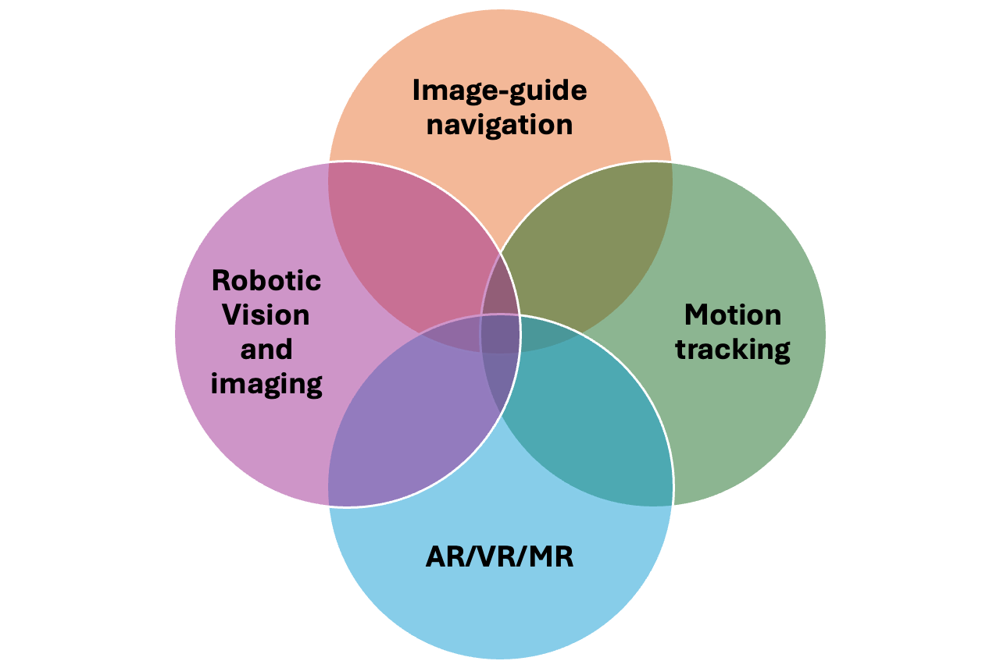
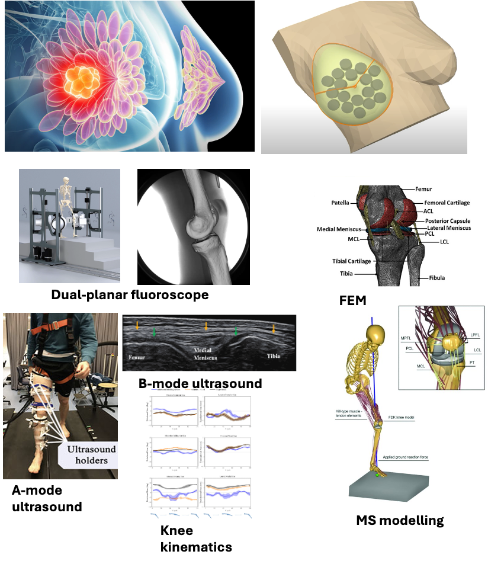
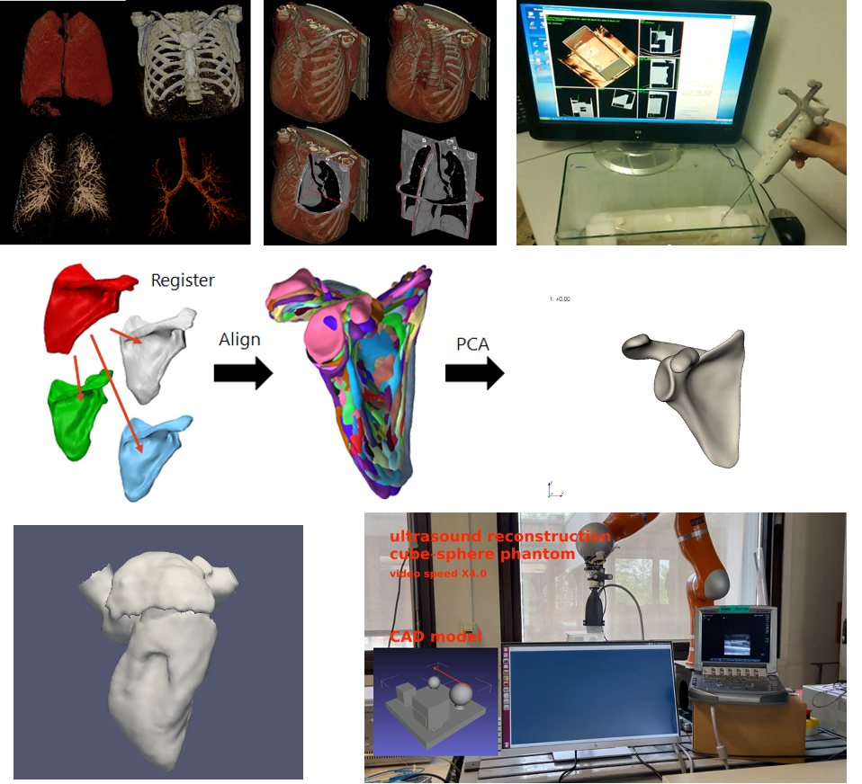

Robotic Learning & AI Reasoning
Multimodal learning from gaze, muscle activity and motion, with a research agenda in predictive models and grounded reasoning.
Robotic Vision and Intelligence Group
University of Twente · Robotics and Mechatronics
We investigate how robots perceive, learn, predict and reason through interaction with the physical world. Our research connects robotic imaging, multimodal learning, spatial understanding and human motion.
Multimodal learning from gaze, muscle activity and motion, with a research agenda in predictive models and grounded reasoning.
Robotic ultrasound, computer vision, anatomical segmentation and image-guided interventions.
3D reconstruction, spatial sensing, navigation and AR/VR interfaces for robotic and medical systems.
Human movement estimation and biomechanical understanding using ultrasound, sEMG, gaze and kinematic signals.

Derives motion-relevant features from surface EMG to infer continuous three-dimensional forearm trajectories.
Fuses gaze attention and muscle activity hierarchically to estimate forearm movement from complementary human signals.
Integrates robotic scanning, contact control, segmentation and reconstruction into an automatic 3D musculoskeletal imaging workflow.
Segments multiple musculoskeletal structures in ultrasound to support automated robotic scanning and reconstruction.
Studies bilateral control for autonomous fluoroscopic viewpoint management during simulated catheter insertion.


B. Lan, D. Sun, I. Tamadon, and K. Niu
IEEE Transactions on Biomedical Engineering · 2026
D. Sun, S. Stramigioli, and K. Niu
IEEE Transactions on Medical Robotics and Bionics, 7(4), 1728-1738 · 2025
M Vannucci, D Sun, B Lan, K Niu, A Riba, N Heikens, M Fehervari, ...
Surgical endoscopy 39 (10), 6819-6827 · 2025
M Vannucci, MR Rodríguez-Luna, B Lan, K Niu, A Lapergola, E Reitano, ...
Surgical endoscopy 39 (7), 4217-4224 · 2025
G. Y. Ward, D. Sun, and K. Niu
Machines, 13(6), 498 · 2025
B. Lan, S. Stramigioli, and K. Niu
IEEE Transactions on Biomedical Engineering, 72(12), 3674-3681 · 2025
KM Kuijer, HJG Smits, PAH Doornaert, K Niu, MHF Savenije, EJ Smid, ...
International Journal of Radiation Oncology* Biology* Physics 122 (1), 186-193 · 2025
B Lan, G Krijnen, S Stramigioli, K Niu
IEEE journal of biomedical and health informatics · 2025
D. Sun, A. Cappellari, B. Lan, M. Abayazid, S. Stramigioli, and K. Niu
Technologies, 13(2), 70 · 2025
B Lan, K Niu
10th Dutch Biomedical Engineering Conference, BME 2025 · 2025
D. Sun, A. Cappellari, B. Lan, and K. Niu
10th Dutch Biomedical Engineering Conference · 2025
B. Lan, D. Sun, and K. Niu
J: Multidisciplinary Scientific Journal · 2025
R Li, E Vander Poorten, K Niu
2024
B Lan, K Niu
arXiv preprint arXiv:2409.18266 · 2024
V Groenhuis, M Bac, S Stramigioli, K Niu
ICRA@ 40 special conference 2024: 40th Anniversary of the IEEE International… · 2024
B Lan, M Abayazid, N Verdonschot, S Stramigioli, K Niu
IEEE Sensors Journal 24 (22), 38174-38184 · 2024
L Marx, V Groenhuis, S Stramigioli, K Niu
2024 10th IEEE RAS/EMBS International Conference for Biomedical Robotics and… · 2024
B Lan, S Stramigioli, K Niu
2024 10th IEEE RAS/EMBS International Conference for Biomedical Robotics and… · 2024
GY Ward
University of Twente · 2024
K Kuijer, H Smits, P Doornaert, K Niu, M Savenije, E Smid, C Terhaard, ...
EUROPEAN JOURNAL OF CLINICAL INVESTIGATION 54 · 2024
B Lan, M Abayazid, N Verdonschot, S Stramigioli, K Niu
2024 IEEE International Conference on Robotics and Automation (ICRA), 921-927 · 2024
KM Kuijer, HJG Smits, PAH Doornaert, K Niu, EJ Smid, CHJ Terhaard, ...
RADIOTHERAPY AND ONCOLOGY 194, S3102-S3104 · 2024
KM Kuijer, HJG Smits, PAH Doornaert, K Niu, EJ Smid, CHJ Terhaard, ...
Radiotherapy and Oncology 194, S3101-S3104 · 2024
K Niu, V Sluiter, B Lan, J Homminga, A Sprengers, N Verdonschot
Sensors 24 (8), 2439 · 2024
M Timmermans, A Massalimova, R Li, A Davoodi, Q Goossens, K Niu, ...
Sensors 23 (19), 8094 · 2023
R Li, A Davoodi, Y Cai, K Niu, G Borghesan, N Cavalcanti, A Massalimova, ...
International journal of computer assisted radiology and surgery 18 (9… · 2023
Y Zhang, E Verschooten, M Ourak, K Van Assche, G Borghesan, D Wu, ...
IEEE Sensors Journal 23 (20), 25377-25389 · 2023
Y Cai, A Davoodi, R Li, M Ourak, K Niu, J Deprest, E Vander Poorten
2023 International Symposium on Medical Robotics (ISMR), 1-7 · 2023
R Li, A Davoodi, Y Cai, K Niu, G Borghesan, N Cavalcanti, A Massalimova, ...
TechRxiv 2023 (0109) · 2023
A Davoodi, R Li, Y Cai, K Niu, G Borghesan, E Vander Poorten
the Proceedings of 2023 International Conference on Advanced Robotics (ICAR… · 2023
V Poliakov, K Niu, E Vander Poorten, D Tsetserukou
2022 IEEE International Conference on Robotics and Biomimetics (ROBIO), 2171… · 2022
Y Zhang, K Van Assche, M Ourak, E Verschooten, G Borghesan, N Kenan, ...
IROS 2022 workshop: A Panacea or an Alchemy?——Benefits and Risks of Robot… · 2022
V Vörös, R Li, A Davoodi, G Wybaillie, E Vander Poorten, K Niu
Journal of imaging 8 (10), 273 · 2022
V Poliakov, K Niu, D Tsetserukou, E Vander Poorten
IEEE Transactions on Medical Robotics and Bionics 4 (3), 608-620 · 2022
D Wu, XT Ha, Y Zhang, M Ourak, G Borghesan, K Niu, F Trauzettel, ...
IEEE Robotics and Automation Letters 7 (4), 8853-8860 · 2022
Y Cai, MA Ahmad, M Ourak, R Li, K Niu, T Vercauteren, S Ourselin, ...
11th Conference on New Technologies for Computer and Robot Assisted Surgery… · 2022
R Li, A Davoodi, Y Cai, E Vander Poorten
11th Conference on New Technologies for Computer and Robot Assisted Surgery… · 2022
Y Zhang, M Ourak, E Verschooten, K Niu, D Wu, G Borghesan, P Joris, ...
Conference on New Technologies for Computer and Robot Assisted Surgery… · 2022
M Schoovaerts, R Li, K Niu, E Vander Poorten
2022 International Symposium on Medical Robotics (ISMR), 1-7 · 2022
D Wu, Y Zhang, M Ourak, XT Ha, K Niu, J Dankelman, E Vander Poorten
2022 International Symposium on Medical Robotics (ISMR), 1-7 · 2022
R Li, Y Cai, K Niu, E Vander Poorten
20th International Conference on Advanced Robotics (ICAR) · 2022
R Li, K Niu, E Vander Poorten
2021 International Symposium on Medical Robotics (ISMR) · 2022
J Legrand, K Niu, Z Qian, K Denis, V Vander Poorten, L Van Gerven, ...
Annals of biomedical engineering 49 (6), 1534-1550 · 2021
D Wu, Y Zhang, M Ourak, K Niu, J Dankelman, E Vander Poorten
IEEE Robotics and Automation Letters 6 (2), 2106-2113 · 2021
J De Smet, A Page, J Deprest, S Housmans, K Niu, E Vander Poorten
Clinical Biomechanics 81, 105204 · 2021
D Wu, M Ourak, K Niu, Y Zhang, MA Ahmad, J Dankelman, ...
32nd Conference of the International Society for Medical Innovation and… · 2020
A Page, J De Smet, J Deprest, S Housmans, K Niu, E Vander Poorten
International Urogynecology Journal 31 (SUPPL 1), S241-S242 · 2020
V Poliakov, K Niu, BP De Vree, D Tsetserukou, E Vander Poorten
International Conference on Virtual Reality and Augmented Reality, 115-127 · 2020
D Tsetserukou, K Niu, E Vander Poorten
10 th Conference on New Technologies for Computer and Robot Assisted Surgery… · 2020
R Li, K Niu, D Wu, E Vander Poorten
10 th Conference on New Technologies for Computer and Robot Assisted Surgery… · 2020
L Ruixuan, K Niu, D Wu, E Vander Poorten
Conference on New Technologies for Computer and Robot Assisted Surgery · 2020
D Wu, M Ourak, MA Ahmad, N Kenan, G Borghesan, J Dankelman, ...
10 th Conference on New Technologies for Computer and Robot Assisted Surgery… · 2020
K Niu, J Legrand, L Van Gerven, E Vander Poorten
the 10th Conference on New Technologies for Computer/Robot Assisted Surgery… · 2020
J De Smet, V Poliakov, K Niu, F Chesterman, J Fornier, MA Ahmad, ...
2019 19th International Conference on Advanced Robotics (ICAR), 566-571 · 2019
K Niu, V Sluiter, J Homminga, A Sprengers, N Verdonschot
Intelligent Orthopaedics: Artificial Intelligence and Smart Image-guided… · 2018
N Verdonschot, A Sprengers, V Mazzoli, M Marra, K Gijsbertse, H Chen, ...
Virtual Physiological Human Conference 2018 · 2018
K Niu, J Homminga, V Sluiter, A Sprengers, N Verdonschot
Medical engineering & physics 57 (1), 61-68 · 2018
K Niu, J Homminga, VI Sluiter, A Sprengers, N Verdonschot
Plos One · 2018
K Niu, T Anijs, V Sluiter, J Homminga, A Sprengers, MA Marra, ...
Journal of biomechanics 72, 134-143 · 2018
K Niu
University of Twente · 2018
K Niu, V Sluiter, A Sprengers, J Homminga, N Verdonschot
17th Annual Meeting of the International Society for Computer Assisted… · 2017
K Niu, JJ Homminga, VIJ Sluiter, AMJ Sprengers, NJJ Verdonschot
5th Dutch Bio-Medical Engineering Conference, BME 2015 · 2015
牛珂楠
东北大学 · 2013
K Niu, N Bao, Y Kang
2012 International Conference on Computerized Healthcare (ICCH), 5-8 · 2012
K Niu
Beijing Biomedical Engineering 30 (5), 484-489 · 2011
牛珂楠， 燕辉， 项士海， 王军博， 孙航， 刘军强， 梁国栋， 吴国城， 尚艺童， ...
北京生物医学工程 30 (5), 484-489 · 2011
B. Lan, E. Juffermans, I. Tamadon, and K. Niu
10th Dutch Biomedical Engineering Conference
M Ourak, G Borghesan, K Niu, F Trauzettel, J Dankelman, A Menciassi, ...
E Vander Poorten
K Niu, J Homminga, N Verdonschot
Research collaborations and BSc, MSc and doctoral projects in robotic intelligence, imaging and motion.
k.niu@utwente.nl · Education & student projects